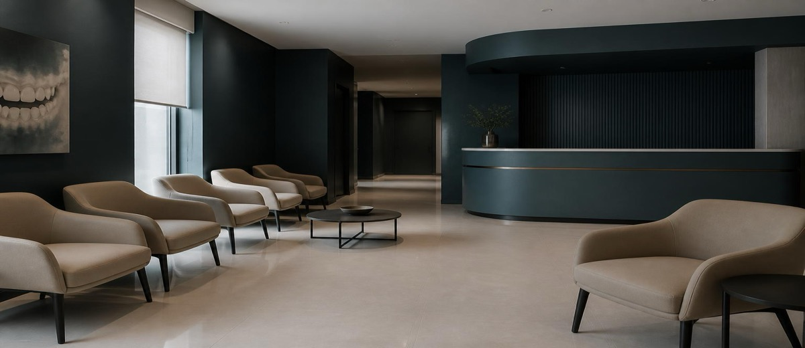

Cuando la cadena cierra de golpe: qué le dice al dueño de clínica independiente

Julio de 2026. Cuatro clínicas de la misma cadena cierran de golpe en Madrid. Sin previo aviso, sin solución para los pacientes, sin nadie al otro lado del teléfono.
Decenas de personas con tratamientos a medias. Algunas con más de 10.000 euros pagados por adelantado. Tres semanas antes, lo mismo había pasado en Barcelona con otra cadena distinta.
Dos cierres. Un mes. Dos ciudades. Mismo resultado: el paciente asume el coste.
Si diriges una clínica independiente, esto no es solo una noticia. Es un aviso sobre qué pasa cuando el modelo se construye sobre publicidad en vez de sobre gestión.
El modelo que no escala
Las cadenas que cierran de golpe no son casos raros ni mala suerte. Son la consecuencia lógica de un modelo de negocio con una grieta estructural.
El esquema es conocido: publicidad agresiva para captar volumen, precio bajo para ganar cuota, financiación de tratamientos para eliminar la fricción del coste. Funciona mientras la captación es más barata que la operación. El día que deja de serlo, no hay colchón.
- Sin reservas operativas: las clínicas que crecen a golpe de anuncio suelen reinvertir en publicidad, no en solvencia. Cuando el flujo se frena, no hay margen de maniobra.
- Sin pacientes fidelizados: un modelo basado en captación perpetua nunca construye una base de pacientes que vuelven solos. Cada mes hay que volver a empezar.
- Sin gestión interna real: cuando todo depende de que siempre entre alguien nuevo, nadie mira lo que pasa con el que ya está dentro: los presupuestos sin cerrar, las citas que no se confirman, los pacientes que llevan dos años sin volver.
El Consejo General de Dentistas pidió una ley de publicidad sanitaria al día siguiente de los cierres de Madrid. La ley llegará o no llegará. Pero el problema de fondo no es el anuncio: es un negocio montado para crecer, no para funcionar.
Lo que el paciente pierde, y lo que tú ganas
El paciente que se queda con 10.000 euros en el aire no eligió mal por ignorancia. Eligió lo más visible, lo más anunciado, lo que parecía más fácil. Eso es exactamente lo que la publicidad agresiva logra: parecer la opción obvia.
Y cuando esa opción falla, el paciente aprende. Aprende a valorar la continuidad, la proximidad, el trato que recibe antes de sentarse en el sillón. Aprende que el precio más bajo no siempre es la opción más barata a largo plazo.
La confianza no se construye con un anuncio. Se construye siendo la clínica que siempre está cuando el paciente vuelve.
Eso es lo que la clínica independiente tiene que defender. No el precio. No la publicidad. La permanencia.
El verdadero riesgo para la clínica independiente no es la cadena
Hay una tentación muy humana cuando ves los anuncios de la cadena de enfrente. La tentación de pensar que el problema es el presupuesto de marketing, que si tuvieras su inversión publicitaria todo sería diferente.
No es así. El riesgo real para una clínica independiente no es no poder gastar como una cadena. Es empezar a pensar como una.
Eso pasa cuando la clínica destina todo el presupuesto a captación y olvida lo de dentro. Cuando cada semana hay que traer pacientes nuevos porque los anteriores no vuelven. Cuando el teléfono suena pero recepción no convierte. Cuando se hacen presupuestos que nadie sigue, citas que se cancelan sin recordatorio, bases de datos con cientos de pacientes dormidos que nadie toca.
Una clínica independiente que gestiona bien lo que ya tiene dentro no necesita gastar como una cadena para crecer. Necesita no perder lo que ya tiene.
Construir sobre gestión, no sobre captación
La diferencia entre una clínica que resiste y una que depende del siguiente anuncio no está en el sillón ni en el equipo clínico. Está en cómo se gestiona lo que ya entra.
Algunos puntos concretos:
- La tasa de no-show: las clínicas dentales en España registran entre un 18% y un 22% de ausencias a citas. Cada hueco en la agenda es un sillón que ya está pagado y no factura. Reducirlo es más rentable que captar más.
- Los presupuestos sin cerrar: uno de cada tres pacientes que acepta un presupuesto nunca empieza el tratamiento. Ese trabajo ya está dentro de la base de datos. Solo necesita seguimiento.
- Los pacientes dormidos: reactivar a alguien que ya confió en ti cuesta diez veces menos que captarlo de cero. La agenda del futuro ya está en la base de datos del pasado.
- La experiencia en recepción: la conversión de llamada a cita cae a la mitad cuando recepción no tiene formación ni protocolo. El anuncio puede traer la llamada; recepción decide si se convierte en paciente.
La permanencia como ventaja competitiva
La clínica independiente tiene una ventaja que ningún fondo de inversión puede comprar: la confianza acumulada con sus pacientes. Esa confianza no es emocional ni sentimental. Es operativa. Significa que el paciente vuelve, que recomienda, que no compara cada tratamiento con la cadena de enfrente.
Pero esa confianza se construye siendo constante, no siendo barato. Se construye estando cuando el paciente vuelve, llamando cuando hay que llamar, explicando lo que hay que explicar.
Dos cierres en un mes. Decenas de pacientes con dinero perdido y bocas a medias. No hace falta esperar a que eso pase cerca para tomar nota. El modelo que falla no falla de golpe. Falla lentamente, por dentro, antes de que nadie lo vea desde fuera.
Construir desde dentro no es una estrategia de nicho para clínicas pequeñas. Es la única que aguanta cuando la captación falla. Y la captación, antes o después, siempre falla.
(Fuente: Gaceta Dental — Consejo General de Dentistas reclama ley de publicidad sanitaria tras cierre de cuatro centros de cadena — julio 2026)